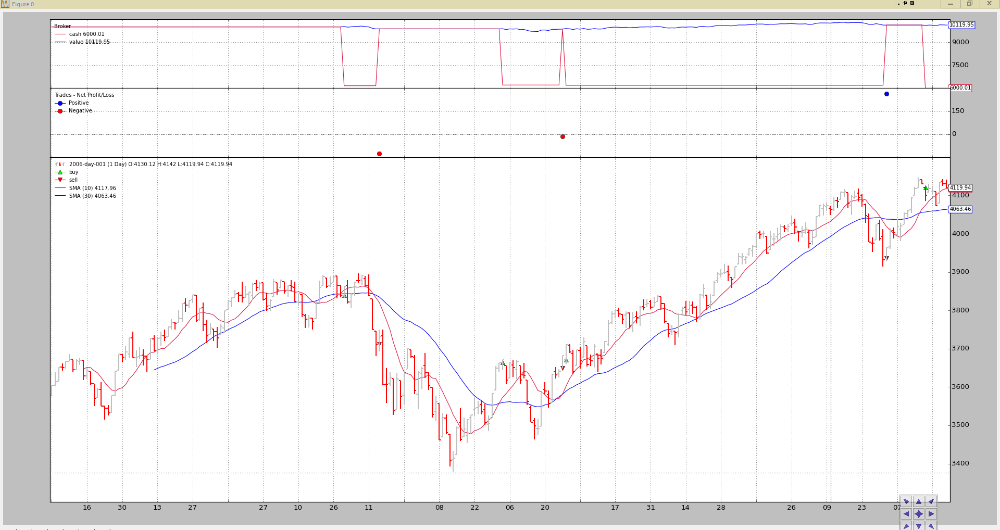
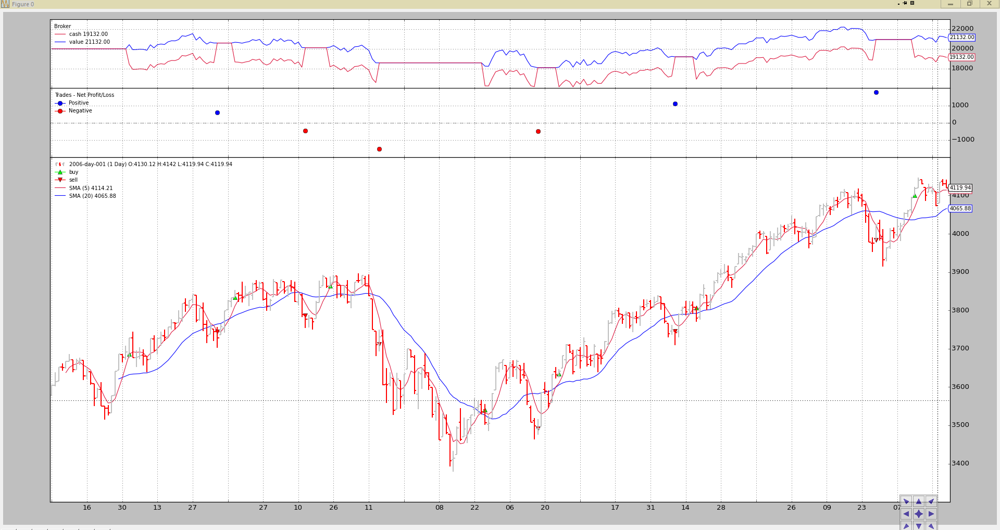

Automating BackTesting¶
So far all backtrader examples and working samples have started from scratch
creating a main Python module which loads datas, strategies, observers and
prepares cash and commission schemes.
One of the goals of algorithmic trading is the automation of trading and given that bactrader is a backtesting platform intented to check trading algorithms (hence is an algotrading platform), automating the use of backtrader was an obvious goal.
When installed backtrader provides 2 entry points in the form of
scripts/executables which which automates most tasks:
bt-run-pya script which uses the codebase from the next itemand
btrun(executable)Entry point created by
setuptoolsduring packaging. The executable offers advantages under Windows where in theory no errors about “path/file not found” will happen.
The description below applies equally to both tools.
btrun allows the end user to:
Say which data feeds have to be loaded
Set the format to load the datas
Specify the date range for the datas
Pass parameters to Cerebro - Disable standard observers
This was an original extra switch before the “Cerebro” parameters were implemented. As such and if a parameter to cerebro with regards to Standard Observers is passed, this will be ignored (parameter
stdstatsto Cerebro)Load one or more observers (example:
DrawDown) from the built-in ones or from a python moduleSet the cash and commission scheme parameters for the broker (commission, margin, mult)
Enable plotting, controlling the amount of charts and style to present the data
Add a parametrized writer to the system
And finally what should be the core competence:
- Load a strategy (a built-in one or from a Python module)
- Pass parameters to the loaded strategy
See below for the Usage of the script.
Applying a User Defined Strategy¶
Let’s consider the following strategy which:
- Simply loads a SimpleMovingAverage (default period 15)
- Prints outs
- Is in a file named
mymod.py
from __future__ import (absolute_import, division, print_function,
unicode_literals)
import backtrader as bt
import backtrader.indicators as btind
class MyTest(bt.Strategy):
params = (('period', 15),)
def log(self, txt, dt=None):
''' Logging function fot this strategy'''
dt = dt or self.data.datetime[0]
if isinstance(dt, float):
dt = bt.num2date(dt)
print('%s, %s' % (dt.isoformat(), txt))
def __init__(self):
sma = btind.SMA(period=self.p.period)
def next(self):
ltxt = '%d, %.2f, %.2f, %.2f, %.2f, %.2f, %.2f'
self.log(ltxt %
(len(self),
self.data.open[0], self.data.high[0],
self.data.low[0], self.data.close[0],
self.data.volume[0], self.data.openinterest[0]))
Executing the strategy with the usual testing sample is easy: easy:
btrun --csvformat btcsv \
--data ../../datas/2006-day-001.txt \
--strategy mymod.py
The chart output

The console output:
2006-01-20T23:59:59+00:00, 15, 3593.16, 3612.37, 3550.80, 3550.80, 0.00, 0.00
2006-01-23T23:59:59+00:00, 16, 3550.24, 3550.24, 3515.07, 3544.31, 0.00, 0.00
2006-01-24T23:59:59+00:00, 17, 3544.78, 3553.16, 3526.37, 3532.68, 0.00, 0.00
2006-01-25T23:59:59+00:00, 18, 3532.72, 3578.00, 3532.72, 3578.00, 0.00, 0.00
...
...
2006-12-22T23:59:59+00:00, 252, 4109.86, 4109.86, 4072.62, 4073.50, 0.00, 0.00
2006-12-27T23:59:59+00:00, 253, 4079.70, 4134.86, 4079.70, 4134.86, 0.00, 0.00
2006-12-28T23:59:59+00:00, 254, 4137.44, 4142.06, 4125.14, 4130.66, 0.00, 0.00
2006-12-29T23:59:59+00:00, 255, 4130.12, 4142.01, 4119.94, 4119.94, 0.00, 0.00
Same strategy but:
- Setting the parameter
periodto 50
The command line:
btrun --csvformat btcsv \
--data ../../datas/2006-day-001.txt \
--plot \
--strategy mymod.py:period=50
The chart output.

Note
if no .py extension is given, bt-run will add it.
Using a built-in Strategy¶
backtrader will slowly be including sample (textbook) strategies. Along with
the bt-run.py script a standard Simple Moving Average CrossOver strategy
is included. The name:
SMA_CrossOver- Parameters
fast(default10) period of the fast moving averageslow(default30) period of the slow moving average
The strategy buys if the fast moving average crosses up the fast and sells (only if it has bought before) upon the fast moving average crossing down the slow moving average.
The code
from __future__ import (absolute_import, division, print_function,
unicode_literals)
import backtrader as bt
import backtrader.indicators as btind
class SMA_CrossOver(bt.Strategy):
params = (('fast', 10), ('slow', 30))
def __init__(self):
sma_fast = btind.SMA(period=self.p.fast)
sma_slow = btind.SMA(period=self.p.slow)
self.buysig = btind.CrossOver(sma_fast, sma_slow)
def next(self):
if self.position.size:
if self.buysig < 0:
self.sell()
elif self.buysig > 0:
self.buy()
Standard execution:
btrun --csvformat btcsv \
--data ../../datas/2006-day-001.txt \
--plot \
--strategy :SMA_CrossOver
Notice the :. The standard notation (see below) to load a strategy is:
module:stragegy:kwargs
With the following rules:
- If module is there and strategy is specified, then that strategy will be used
- If module is there but no strategy is specified, the 1st strategy found in the module will be returned
- If no module is specified, “strategy” is assumed to refer to a strategy in the
backtraderpackage- If module and/or strategy are there, if kwargs are present they will be passed to the corresponding strategy
Note
The same notation and rules apply to --observer, --analyzer and
--indicator options
Obviously for the corresponding object types
The output
{kind=link}
One last example adding commission schemes, cash and changing the parameters:
btrun --csvformat btcsv \
--data ../../datas/2006-day-001.txt \
--plot \
--cash 20000 \
--commission 2.0 \
--mult 10 \
--margin 2000 \
--strategy :SMA_CrossOver:fast=5,slow=20
The output
{kind=link}
We have backtested the strategy:
Changing the moving average periods
Setting a new starting cash
Putting a commission scheme in place for a futures-like instrument
See the continuous variations in cash with each bar, as cash is adjusted for the futures-like instrument daily changes
Using no Strategy¶
This is a an over-statement. A strategy will be applied, but you can ommit any kind of strategy and a default backtrader.Strategy will be added.
Analyzers, Observers and Indicators will be automatically injected in the strategy.
An example:
btrun --csvformat btcsv \
--data ../../datas/2006-day-001.txt \
--cash 20000 \
--commission 2.0 \
--mult 10 \
--margin 2000 \
--nostdstats \
--observer :Broker
This will do not much but serves the purpose:
- A default backtrader.Strategy is added in the background
- Cerebro will not instantiate the regular
stdstatsobservers (Broker, BuySell, Trades)- A
Brokerobserver is added manually
As mentioned above, the nostdstats is a legacy parameter. Newer versions of
btrun can pass parameters directly to Cerebro. An equivalent invocation
would be:
btrun --csvformat btcsv \
--data ../../datas/2006-day-001.txt \
--cash 20000 \
--commission 2.0 \
--mult 10 \
--margin 2000 \
--cerebro stdstats=False \
--observer :Broker
Adding Analyzers¶
btrun also supports adding Analyzers with the same syntax used for the
strategies to choose between internal/external analyzers.
Example with a SharpeRatio analysis for the years 2005-2006:
btrun --csvformat btcsv \
--data ../../datas/2005-2006-day-001.txt \
--strategy :SMA_CrossOver \
--analyzer :SharpeRatio
The console output is nothing.
If a printout of the Analyzer results is wished, it must be specified with:
--pranalyzerwhich defaults to calling the next one (unless the Analyzer has overriden the proper method)--ppranalyzerwhich uses thepprintmodule to print the results
Note
The two printing options were implemented before writers were part of
backtrader. Adding a writer without csv output will achieve the same (and the
output has been improved)
Extending the example from above:
btrun --csvformat btcsv \
--data ../../datas/2005-2006-day-001.txt \
--strategy :SMA_CrossOver \
--analyzer :SharpeRatio \
--plot \
--pranalyzer
====================
== Analyzers
====================
##########
sharperatio
##########
{'sharperatio': 11.647332609673256}
Good strategy!!! (Pure luck for the example actually which also bears no commissions)
The chart (which simply shows the Analyzer is not in the plot, because Analyzers cannot be plotted, they aren’t lines objects)

The same example but using a writer argument:
btrun --csvformat btcsv \
--data ../../datas/2005-2006-day-001.txt \
--strategy :SMA_CrossOver \
--analyzer :SharpeRatio \
--plot \
--writer
===============================================================================
Cerebro:
-----------------------------------------------------------------------------
- Datas:
+++++++++++++++++++++++++++++++++++++++++++++++++++++++++++++++++++++++++++
- Data0:
- Name: 2005-2006-day-001
- Timeframe: Days
- Compression: 1
-----------------------------------------------------------------------------
- Strategies:
+++++++++++++++++++++++++++++++++++++++++++++++++++++++++++++++++++++++++++
- SMA_CrossOver:
*************************************************************************
- Params:
- fast: 10
- slow: 30
- _movav: SMA
*************************************************************************
- Indicators:
.......................................................................
- SMA:
- Lines: sma
~~~~~~~~~~~~~~~~~~~~~~~~~~~~~~~~~~~~~~~~~~~~~~~~~~~~~~~~~~~~~~~~~~~~~
- Params:
- period: 30
.......................................................................
- CrossOver:
- Lines: crossover
- Params: None
*************************************************************************
- Observers:
.......................................................................
- Broker:
- Lines: cash, value
- Params: None
.......................................................................
- BuySell:
- Lines: buy, sell
- Params: None
.......................................................................
- Trades:
- Lines: pnlplus, pnlminus
- Params: None
*************************************************************************
- Analyzers:
.......................................................................
- Value:
- Begin: 10000.0
- End: 10496.68
.......................................................................
- SharpeRatio:
- Params: None
~~~~~~~~~~~~~~~~~~~~~~~~~~~~~~~~~~~~~~~~~~~~~~~~~~~~~~~~~~~~~~~~~~~~~
- Analysis:
- sharperatio: 11.6473326097
Adding Indicators and Observers¶
As with Strategies and Analyzers btrun can also add:
Indicators
and
Observers
The syntax is exactly the same as seen above when adding a Broker observer.
Let’s repeat the example but adding a Stochastic, the Broker and having
a look at the plot (we’ll change some parameters):
btrun --csvformat btcsv \
--data ../../datas/2006-day-001.txt \
--nostdstats \
--observer :Broker \
--indicator :Stochastic:period_dslow=5 \
--plot
The chart
{kind=link}
Plotting Control¶
Most of the above examples have used the following option:
--plotwhich has activated the creation a default plot
More control can be achieved by adding kwargs to the --plot
option
--plot style="candle"for example to plot with candlesticks instead of plotting with aLineOnClosestyle (which is the plotting default)
The invocation:
btrun --csvformat btcsv \
--data ../../datas/2006-day-001.txt \
--nostdstats \
--observer :Broker \
--indicator :Stochastic:period_dslow=5 \
--plot style=\"candle\"
Note
The quotes around candle are quoted with backslashed \ because the
example is being run in a bash shell which removes that before passing the
arguments to the script.
Backslash quoting is needed in this case to ensure “bar” makes it to the script and can be evaluated as a string
The chart
{kind=link}
Usage of the script¶
Directly from the script:
$ btrun --help
usage: btrun-script.py [-h] --data DATA [--cerebro [kwargs]] [--nostdstats]
[--format {yahoocsv_unreversed,vchart,vchartcsv,yahoo,mt4csv,ibdata,sierracsv,yahoocsv,btcsv,vcdata}]
[--fromdate FROMDATE] [--todate TODATE]
[--timeframe {microseconds,seconds,weeks,months,minutes,days,years}]
[--compression COMPRESSION]
[--resample RESAMPLE | --replay REPLAY]
[--strategy module:name:kwargs]
[--signal module:signaltype:name:kwargs]
[--observer module:name:kwargs]
[--analyzer module:name:kwargs]
[--pranalyzer | --ppranalyzer]
[--indicator module:name:kwargs] [--writer [kwargs]]
[--cash CASH] [--commission COMMISSION]
[--margin MARGIN] [--mult MULT] [--interest INTEREST]
[--interest_long] [--slip_perc SLIP_PERC]
[--slip_fixed SLIP_FIXED] [--slip_open]
[--no-slip_match] [--slip_out] [--flush]
[--plot [kwargs]]
Backtrader Run Script
optional arguments:
-h, --help show this help message and exit
--resample RESAMPLE, -rs RESAMPLE
resample with timeframe:compression values
--replay REPLAY, -rp REPLAY
replay with timeframe:compression values
--pranalyzer, -pralyzer
Automatically print analyzers
--ppranalyzer, -ppralyzer
Automatically PRETTY print analyzers
--plot [kwargs], -p [kwargs]
Plot the read data applying any kwargs passed
For example:
--plot style="candle" (to plot candlesticks)
Data options:
--data DATA, -d DATA Data files to be added to the system
Cerebro options:
--cerebro [kwargs], -cer [kwargs]
The argument can be specified with the following form:
- kwargs
Example: "preload=True" which set its to True
The passed kwargs will be passed directly to the cerebro
instance created for the execution
The available kwargs to cerebro are:
- preload (default: True)
- runonce (default: True)
- maxcpus (default: None)
- stdstats (default: True)
- live (default: False)
- exactbars (default: False)
- preload (default: True)
- writer (default False)
- oldbuysell (default False)
- tradehistory (default False)
--nostdstats Disable the standard statistics observers
--format {yahoocsv_unreversed,vchart,vchartcsv,yahoo,mt4csv,ibdata,sierracsv,yahoocsv,btcsv,vcdata}, --csvformat {yahoocsv_unreversed,vchart,vchartcsv,yahoo,mt4csv,ibdata,sierracsv,yahoocsv,btcsv,vcdata}, -c {yahoocsv_unreversed,vchart,vchartcsv,yahoo,mt4csv,ibdata,sierracsv,yahoocsv,btcsv,vcdata}
CSV Format
--fromdate FROMDATE, -f FROMDATE
Starting date in YYYY-MM-DD[THH:MM:SS] format
--todate TODATE, -t TODATE
Ending date in YYYY-MM-DD[THH:MM:SS] format
--timeframe {microseconds,seconds,weeks,months,minutes,days,years}, -tf {microseconds,seconds,weeks,months,minutes,days,years}
Ending date in YYYY-MM-DD[THH:MM:SS] format
--compression COMPRESSION, -cp COMPRESSION
Ending date in YYYY-MM-DD[THH:MM:SS] format
Strategy options:
--strategy module:name:kwargs, -st module:name:kwargs
This option can be specified multiple times.
The argument can be specified with the following form:
- module:classname:kwargs
Example: mymod:myclass:a=1,b=2
kwargs is optional
If module is omitted then class name will be sought in
the built-in strategies module. Such as in:
- :name:kwargs or :name
If name is omitted, then the 1st strategy found in the mod
will be used. Such as in:
- module or module::kwargs
Signals:
--signal module:signaltype:name:kwargs, -sig module:signaltype:name:kwargs
This option can be specified multiple times.
The argument can be specified with the following form:
- signaltype:module:signaltype:classname:kwargs
Example: longshort+mymod:myclass:a=1,b=2
signaltype may be ommited: longshort will be used
Example: mymod:myclass:a=1,b=2
kwargs is optional
signaltype will be uppercased to match the defintions
fromt the backtrader.signal module
If module is omitted then class name will be sought in
the built-in signals module. Such as in:
- LONGSHORT::name:kwargs or :name
If name is omitted, then the 1st signal found in the mod
will be used. Such as in:
- module or module:::kwargs
Observers and statistics:
--observer module:name:kwargs, -ob module:name:kwargs
This option can be specified multiple times.
The argument can be specified with the following form:
- module:classname:kwargs
Example: mymod:myclass:a=1,b=2
kwargs is optional
If module is omitted then class name will be sought in
the built-in observers module. Such as in:
- :name:kwargs or :name
If name is omitted, then the 1st observer found in the
will be used. Such as in:
- module or module::kwargs
Analyzers:
--analyzer module:name:kwargs, -an module:name:kwargs
This option can be specified multiple times.
The argument can be specified with the following form:
- module:classname:kwargs
Example: mymod:myclass:a=1,b=2
kwargs is optional
If module is omitted then class name will be sought in
the built-in analyzers module. Such as in:
- :name:kwargs or :name
If name is omitted, then the 1st analyzer found in the
will be used. Such as in:
- module or module::kwargs
Indicators:
--indicator module:name:kwargs, -ind module:name:kwargs
This option can be specified multiple times.
The argument can be specified with the following form:
- module:classname:kwargs
Example: mymod:myclass:a=1,b=2
kwargs is optional
If module is omitted then class name will be sought in
the built-in analyzers module. Such as in:
- :name:kwargs or :name
If name is omitted, then the 1st analyzer found in the
will be used. Such as in:
- module or module::kwargs
Writers:
--writer [kwargs], -wr [kwargs]
This option can be specified multiple times.
The argument can be specified with the following form:
- kwargs
Example: a=1,b=2
kwargs is optional
It creates a system wide writer which outputs run data
Please see the documentation for the available kwargs
Cash and Commission Scheme Args:
--cash CASH, -cash CASH
Cash to set to the broker
--commission COMMISSION, -comm COMMISSION
Commission value to set
--margin MARGIN, -marg MARGIN
Margin type to set
--mult MULT, -mul MULT
Multiplier to use
--interest INTEREST Credit Interest rate to apply (0.0x)
--interest_long Apply credit interest to long positions
--slip_perc SLIP_PERC
Enable slippage with a percentage value
--slip_fixed SLIP_FIXED
Enable slippage with a fixed point value
--slip_open enable slippage for when matching opening prices
--no-slip_match Disable slip_match, ie: matching capped at
high-low if slippage goes over those limits
--slip_out with slip_match enabled, match outside high-low
--flush flush the output - useful under win32 systems